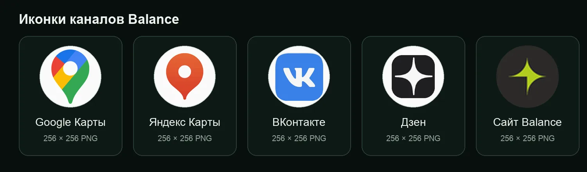
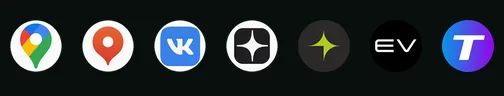
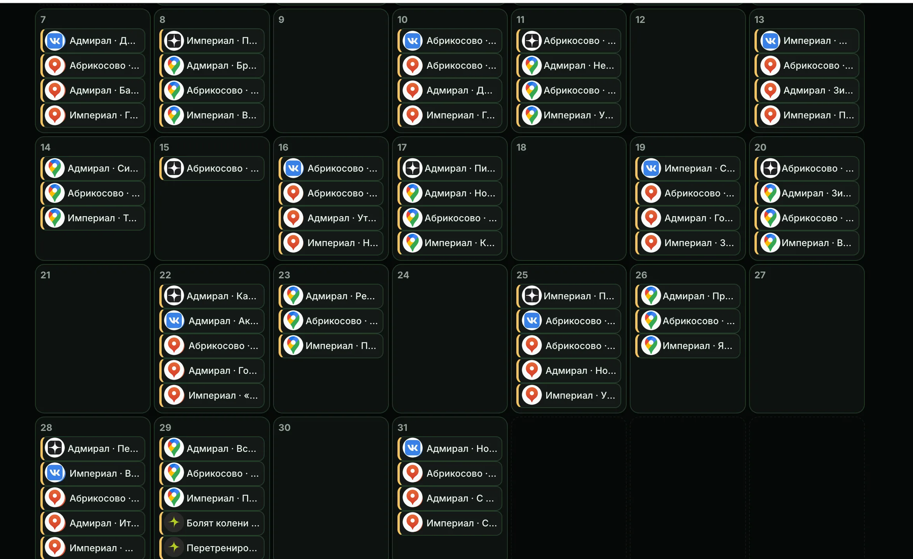
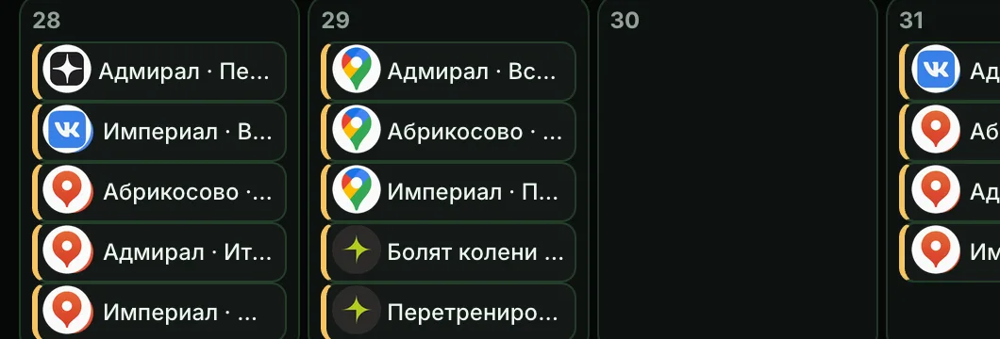
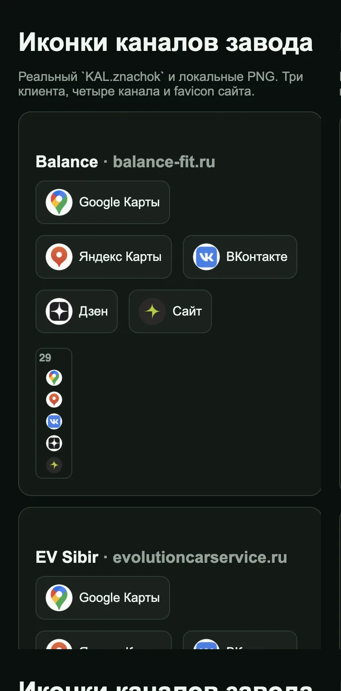

Честный статус
Реализация готова, production не тронут
Нужно отдельное решение на обновление FastAPI/Starlette и полный цикл проверок зависимостей.
| Контур | Результат | Статус |
|---|---|---|
| Код | 7 локальных PNG, favicon по домену клиента, правило для новых площадок и fallback буквами. | Коммит 61ec06c |
| Проверки | 885 тестов, change-reviewer PASS, локальный браузер трёх клиентов на 1280 и 375 px. | PASS |
| Production | Starlette 0.41.3: две High DoS. Push и выкладка не выполнялись. | NO-GO до обновления зависимостей |
Главный вывод: согласованные иконки реализованы для всех проектов и проверены, но на боевой завод не установлены. deploy-check вернул NO-GO из-за старых production-уязвимостей Starlette уровня High.
Что нужно от тебя: отдельное разрешение обновить FastAPI/Starlette и провести полный цикл проверок зависимостей. Без него я не меняю рабочий стек и не обхожу запрет выпуска.
1. Что согласовано и реализовано

Общие каналы получили единые PNG 256×256:
- Google Карты;
- Яндекс Карты, включая внутренний канал
yandex_biznes; - ВКонтакте;
- Дзен.
Канал «Сайт» получает favicon текущего проекта, а не один значок Balance для всех:
| Проект | Домен | Значок сайта |
|---|---|---|
| Balance | balance-fit.ru |
Лаймовая звезда из favicon сайта |
| EV Sibir | evolutioncarservice.ru |
EV из favicon сайта |
| TEYES Sibir | teyes-sibir.ru |
T из favicon сайта |

2. Как это выглядит в календаре

Согласованный макет содержит 70 замен. Сетка, названия клубов, обрезанные заголовки, жёлтые полосы и расписание не менялись.

После согласования макет перенесён в общий рендер KAL.znachok, поэтому одно изменение работает для владельца, клиентских кабинетов, сводки, фильтров и календаря.
3. Что заложено для будущих площадок
В web/kanaly.js записан простой контракт:
- Для новой площадки добавляется локальный PNG 256×256 в
web/iconsи полеikonkaв реестре канала. - Для нового клиента добавляется favicon в
SAYT_IKONKIпо домену. - Если файл ещё не добавлен, остаётся понятная буква, а не чужой логотип или сломанная ссылка.
Внешние URL при рендере не используются. Изображения имеют фиксированные размеры, пустой alt рядом с доступным названием канала и ленивую загрузку. Отдельное мобильное правило убирает лишние боковые поля.
4. Проверки кода
| Проверка | Результат |
|---|---|
| RED | Старый код упал по отсутствию saytDomen и PNG |
| GREEN | 2 focused-теста прошли |
| Полный suite | 885 тестов прошли |
| JavaScript | node --check обоих изменённых файлов прошёл |
| Независимое ревью | FAIL на мобильном padding → исправление → PASS |
| Секреты | gitleaks коммита 61ec06c: утечек нет |
| Браузер | Локальный рендер Balance, EV и TEYES на 1280 и 375 px проверен |
| Коммиты | 61ec06c – код и иконки, 9727f1d – состояние проекта |

Проверены раздельные favicon трёх клиентов, буквенный fallback неизвестного канала и домена, семь локальных PNG 256×256 и отсутствие внешних зависимостей.
5. Почему на боевом заводе иконок ещё нет
Среда: production. Проверенная версия: 61ec06c. Вердикт: NO-GO.
| Пункт deploy-check | Статус | Доказательство |
|---|---|---|
| 1. Тесты | PASS | 885 тестов |
| 2. Git | PASS | Только собственные точные коммиты |
| 3. Схема БД | N/A | Модели и схема не менялись |
| 4. Секреты | PASS | gitleaks чисто |
| 5. Отладочные артефакты | PASS | В изменённых production JS нет console.log, debugger, TODO |
| 6. Переменные окружения | N/A | Новых переменных нет |
| 7. Авторизация | N/A | API не менялся; публичные только статические PNG |
| 8. Зависимости | FAIL | Starlette 0.41.3: High DoS |
| 9. Сборка | PASS | Статический frontend без bundle, Node-проверки прошли |
| 10. Миграции | N/A | Данных и миграций нет; резервная копия в штатном скрипте предусмотрена |
Блокеры подтверждены через OSV 28.11.2026:
CVE-2025-62727– O(n²) DoS через объединение Range-заголовков, доступность High;CVE-2026-54283– игнорирование лимитовrequest.form()дляapplication/x-www-form-urlencoded, доступность High.
Это старый техдолг, а не изменение из задачи иконок. Обновлять зависимости в том же коммите не стал: это отдельный риск для всего завода.
6. Что осталось для боевого результата
- Отдельно обновить FastAPI/Starlette до безопасных совместимых версий.
- Прогнать полный suite, проверки API, статики, авторизации и боевого UI.
- Повторить
deploy-checkдоGO. - Выполнить
scripts/vylozhit.shс резервной копией базы. - Сравнить живой календарь Balance, EV и TEYES на десктопе и телефоне с этим макетом.
- Обновить публичную схему механик завода после выпуска.
Сейчас push и vylozhit.sh не выполнялись. Боевая база, сервисы и текущий завод не затронуты.
Источники
- Согласование Артёма и присланные логотипы, 28.11.2026.
- Google Maps icon (2020), Wikimedia Commons – высокодетализированная версия знака.
- Favicon Balance, EV Sibir и TEYES Sibir, получены 28.11.2026.
- OSV: CVE-2025-62727 и CVE-2026-54283, прочитано 28.11.2026.
- Тесты, независимый change-reviewer и локальная браузерная проверка, 28.11.2026.
.svg){kind=link}
Что раскрыть
- Сам код иконок готов и не требует доработки по текущему ревью.
- Для выпуска нужен отдельный шаг обновления зависимостей, а не повторная попытка выкладки.